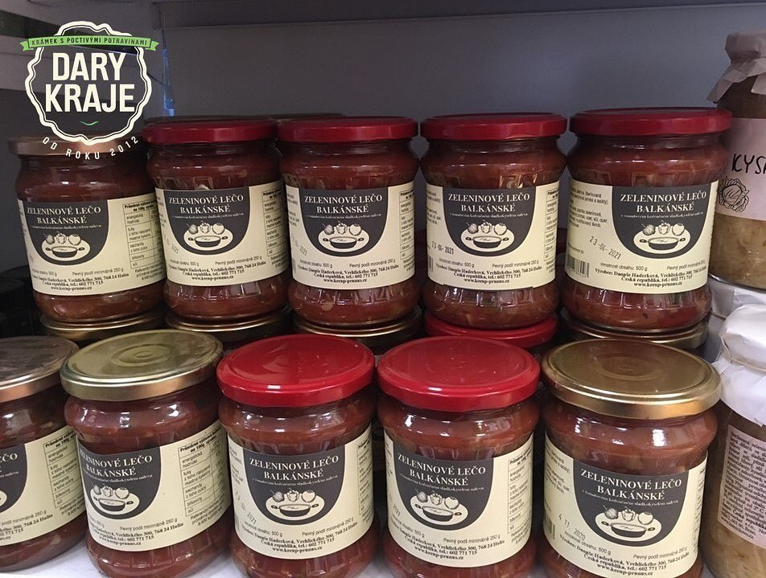

Lečo s klobásou podľa @darykraje — Normy Jedál
Kdo ještě nestihl při pondělku poobědvat, máme pro vás tip na poctivý zeleninový "rychlooběd" 😊🍅🌶. Stačí když přidáte vajíčka🥚😉. No a větší labužníci ještě doplní výživovou hodnotu klobáskou od Kusáků 😉😂. K tomu samozřejmě náš čerstvý kváskový chleba🍞. Prostě dokonalost 😆.
#leco #sklobaskou #zeleninovyobed #lecosklobasou #darykraje #darykrajedomu